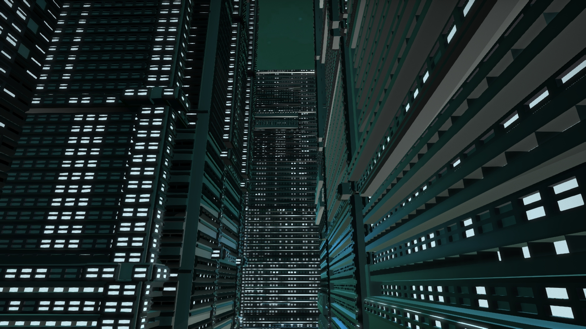

Our group made strategic decisions for the two week span of the project in deciding to split up into teams that focused on creating the basic primitive building blocks, generating each building, generating the plan for the entire city (ie. where to place each individual building), and writing scripts and an interface to manage the entire process.
Stills and Behind the Scenes:
Because each building file became so massive, we needed to be strategic when placing each building in the 3D scene, to save memory and to optimize compute time. Our solution was to first create a proxy city made up of simple rectangles, and then copy the locations of each dummy building to the real city. During filming of the video, we created a method for defining spline curves followed by the "camera" in the proxy city, and then we transferred the camera movements to the real city.
Having highly collaborative and dedicated team members allowed us to recognize when we needed to scale down our efforts in certain areas. We worked together to stay on track throughout the project and complete each component of the project in a timely manner.
Dummy city:
Spline curves to set the path of the camera as it flies through the city:
